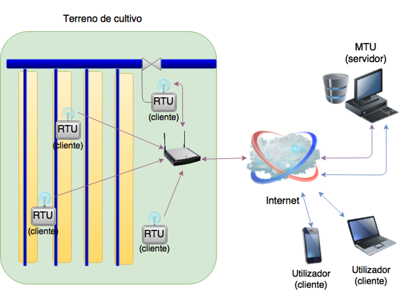
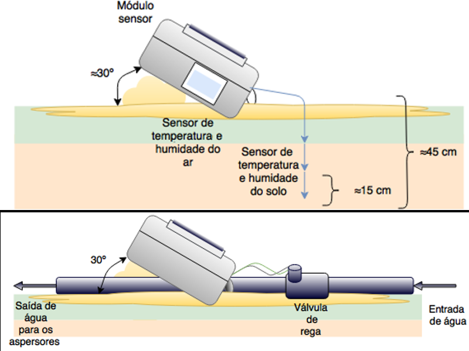

Remote monitoring and control of agricultural irrigation systems
Master's thesis in Mechanical Engineering University of Aveiro
- 


- 
Most of today's irrigation systems on the market are not optimized for some of the challenges of modern agriculture. In many cases the cultivated land does not belong to the farmer who exploits them (they are rented), which limits the installation of irrigation equipment. On the other hand, conventional solutions either require great amout of labor, or they need external energy sources. External energy may be derived from fossil fuels, or electricity wich can be drwan from the distribution network, or by periodic exchanging of batteries. These factors increase maintenance costs, create barriers to the use of the land and potentially making it not viable for production.
The present paper documents the development of a system to monitor and control irrigation. This system must be capable of monitoring the temperature and humidity of the soil and air, it must be portable, easy to install in the field, energetically self-su cient and be able to operate irrigation valves remotely. To achieve this goal, were developed modules that use a NodeMCU as a microcontroller and to communicate through a Wi-Fi network. These modules recharge the batteries using solar panels, and are the remote terminal units of the system. To manage the system an application was created that receives data from the land through the internet and sends commands to start and end irrigation cycles. Finally, a user interface was developed, which is presented through a web page on a browser so that the user can interact with the system on any fixed or mobile device that has access to the internet
The project required the development of an HTML/JS interface, back-end and server, and finally the electronics capable of talking to the server, acquiring data and acting on the valves.
Through the interface application the user can change irrigation schedules and verify if the temperature and humidity of the soil and air are within the required values.
The server acts a similarly to a REST service, providing data as JSON objects and HTML pages. At the same time it is responsible for a SQLite database management an irrigation schedule management.
On the field a custom made circuit, using a NodeMCU development kit, handles the sensors and http communication with the server. The code documentation can be read at: Valve code and Sensor code.